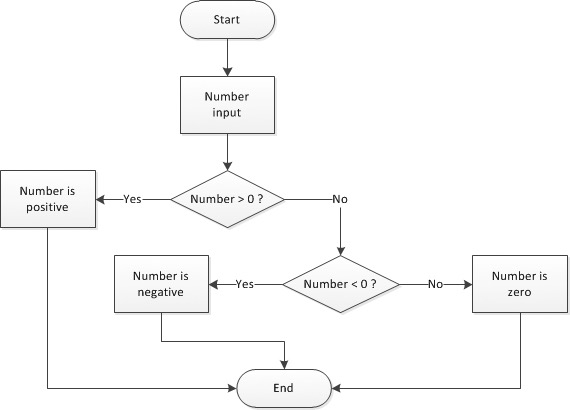

Add conditions
Up until now, all the code in our programs has been executed chronologically. Let's enrich our code by adding conditional execution!
What's a condition?
Suppose we want to write a program that asks the user to enter a number and then displays a message if the number is positive. Here is the corresponding algorithm.
The message should display only if the number is positive; this means it's "subject" to a condition.
The if statement
Here's how you translate the program to JavaScript.
const number = Number(prompt("Enter a number:"));
if (number > 0) {
console.log(`${number} is positive`);
}
The console.log(...) command is executed only if the number is positive. Test this program to see for yourself!
Conditional syntax looks like this:
The pair of opening and closing braces defines the block of code associated with an if statement. This statement represents a test. It results in the following: "If the condition is true, then execute the instructions contained in the code block".
The condition is always placed in parentheses after the if. The statements within the associated code block are shifted to the right. This practice is called indentation and helps make your code more readable. As your programs grow in size and complexity, it will become more and more important. The indentation value is often 2 or 4 spaces.
Info
When the code block has only one statement, braces may be omitted. As a beginner, you should nonetheless always use braces when writing your first conditional statements.
Conditions
A condition is an expression that evaluates as a value either true or false: it's called a boolean value. When the value of a condition is true, we say that this condition is satisfied.
We have already studied numbers and strings, two types of data in JavaScript. Booleans are another type. This type has only two possible values: true and false.
Any expression producing a boolean value (either true or false) can be used as a condition in an if statement. If the value of this expression is true, the code block associated with it is executed.
if (true) {
// The condition for this if is always true
// This block of code will always be executed
}
if (false) {
// The condition for this if is always false
// This block of code will never be executed
}
Boolean expressions can be created using the comparison operators shown in the following table.
| Operator | Meaning |
|---|---|
=== |
Equal |
!== |
Not equal to |
< |
Less than |
<= |
Less than or equal to |
> |
Greater than |
>= |
Greater than or equal to |
In some other programming languages, equality and inequality operators are == and !=. They also exist in JavaScript, but it's safer to use === and !== (more details).
Warning
It's easy to confuse comparison operators like === (or ==) with the assignment operator =. They're very, very different. Be warned!
Now let's modify the example code to replace > with >= and change the message, then test it with the number 0.
const number = Number(prompt("Enter a number:"));
if (number >= 0) {
console.log(`${number} is positive or zero`);
}
If the user input is 0, the message appears in the console, which means that the condition(number >= 0) was satisfied.
Alternative conditions
You'll often want to have your code execute one way when something's true and another way when something's false.
The else statement
Let's enrich our sample with different messages depending if the number's positive or not.
const number = Number(prompt("Enter a number:"));
if (number > 0) {
console.log(`${number} is positive`);
}
else {
console.log(`${number} is negative or zero`);
}
Test this code with a positive number, negative number, and zero, while watching the result in the console. The code executes differently depending if the condition (number > 0) is true or false.
The syntax for creating an alternative is to add an else keyword after an initial if.
if (condition) {
// Code to run when the condition is true
}
else {
// Code to run when the condition is false
}
You can translate an if/else statement like this: "If the condition is true, then execute this first set of code; otherwise, execute this next set of code". Only one of the two code blocks will be executed.
Nesting conditions
Let's go to the next level and display a specific message if the entered number is zero. See this example, which has a positive test case, negative test case, and a last resort of the number being zero.
const number = Number(prompt("Enter a number:"));
if (number > 0) {
console.log(`${number} is positive`);
} else {
// number <= 0
if (number < 0) {
console.log(`${number} is negative`);
} else {
// number === 0
console.log(`${number} is zero`);
}
}
Let's wrap our heads around it. If the code block associated to the first else is run, then the number has to be either strictly negative or zero. Inside this block, a second if statement checks if the number is negative. If it's not, we know for sure that it's zero.
Tip
When learning to write nested conditions, you should add descriptive comments to each condition, just like in the previous example.
The execution flow for the previous program can be expressed graphically using a flow diagram.

This example shows how essential indentation is for understanding a program's flow. There is no limit to the possible depth of condition nesting, but too many will affect program visibility.
A particular case happens when the only statement in an else block is an if. In that case, you can write this else on the same line as the if and without braces. Here's a more concise way to write our example program.
const number = Number(prompt("Enter a number:"));
if (number > 0) {
console.log(`${number} is positive`);
} else if (number < 0) {
console.log(`${number} is negative`);
} else {
console.log(`${number} is zero`);
}
Add additional logic
"And" operator
Suppose you want to check if a number is between 0 and 100. You're essentially checking if it's "greater than or equal to 0" and "less than or equal to 100". Both sub-conditions must be satisfied at the same time.
Info
The expression 0 <= number <= 100 is correct from a mathematical point of view but cannot be written in JavaScript (neither in most other programming languages).
Here's how you'd translate that same check into JS.
if ((number >= 0) && (number <= 100)) {
console.log(`${number} is between 0 and 100, both included`);
}
Tip
Parentheses between sub-conditions are not mandatory but I advise you to add them anyway, to avoid nasty bugs in some special cases.
The && operator ("logical and") can apply to both types of boolean values. true will only be the result of the statement if both conditions are true.
console.log(true && true); // true
console.log(true && false); // false
console.log(false && true); // false
console.log(false && false); // false
The previous result is the truth table of the && operator.
"Or" operator
Now imagine you want to check that a number is outside the range of 0 and 100. To meet this requirement, the number should be less than 0 or greater than 100.
Here it is, translated into JavaScript:
The || operator ("logical or") makes statements true if at least one of the statements is true. Here's its truth table:
console.log(true || true); // true
console.log(true || false); // true
console.log(false || true); // true
console.log(false || false); // false
Short-circuit evaluation
As logical expressions are evaluated left to right, they are tested for possible "short-circuit" evaluation using the following rules:
false && exprreturnsfalse.true || exprreturnstrue.
In both cases, the expr expression is not evaluated.
Usage with non-boolean values
The && and || operators can also be applied to non-boolean values. In these cases, they may not return a boolean value.
expr1 && expr2returnsexpr1if this expression can be converted tofalse. Otherwise, it returnsexpr2.expr1 || expr2returnsexpr1if this expression can be converted totrue. Otherwise, it returnsexpr2.
In JavaScript, a value or an expression that can be converted to false is said to be falsy. If, on the contrary, it can be converted to true, it is so-called truthy. All values are considered truthy except for the following falsy ones:
false(obviously!)undefinednullNaN(Not A Number)0""or''
Here are a few examples illustrating this JS-specific behaviour.
console.log(true && "Hello"); // "Hello"
console.log(false && "Hello"); // false
console.log(undefined && "Hello"); // undefined
console.log("" && "Hello"); // ""
console.log("Hello" && "Goodbye") // "Goodbye"
console.log(true || "Hello"); // true
console.log(false || "Hello"); // "Hello"
console.log(undefined || "Hello"); // "Hello"
console.log("" || "Hello"); // "Hello"
console.log("Hello" || "Goodbye") // "Hello"
"Not" operator
There's another operator for when you know what you don’t want: the not operator! You'll use a ! for this.
Here's the truth table of the ! operator.
Multiple choices
Let's write some code that helps people decide what to wear based on the weather using if/else.
const weather = prompt("What's the weather like?");
if (weather === "sunny") {
console.log("T-shirt time!");
} else if (weather === "windy") {
console.log("Windbreaker life.");
} else if (weather === "rainy") {
console.log("Bring that umbrella!");
} else if (weather === "snowy") {
console.log("Just stay inside!");
} else {
console.log("Not a valid weather type");
}
When a program should trigger a block from several operations depending on the value of an expression, you can write it using the JavaScript statement switch to do the same thing.
const weather = prompt("What's the weather like?");
switch (weather) {
case "sunny":
console.log("T-shirt time!");
break;
case "windy":
console.log("Windbreaker life.");
break;
case "rainy":
console.log("Bring that umbrella!");
break;
case "snowy":
console.log("Winter is coming! Just stay inside!");
break;
default:
console.log("Not a valid weather type");
}
If you test it out, the result will be the same as the previous version.
The switch statement kicks off the execution of one code block among many. Only the code block that matches the relevant situation will be executed.
switch (expression) {
case value1:
// Code to run when the expression matches value1
break;
case value2:
// Code to run when the expression matches value2
break;
// ...
default:
// Code to run when neither case matches
}
You can set as many cases as you want! The word default, which is put at the end of switch, is optional. It can let you handle errors or unexpected values.
Adding a break; in each block is important so you get out of the switch statement!
const x = "abc";
switch (x) {
case "abc":
console.log("x = abc");
// break omitted: the next block is also run!
case "def":
console.log("x = def");
break;
}
The previous example show "x = abc" (the correct result) but also "x = def".
TL;DR
- The
ifkeyword defines a conditional statement, also called a test. The associated code block is only run if the condition is satisfied (its value istrue). Thus, a condition is an expression whose evaluation always produces a boolean result (trueorfalse).
-
The code block associated to an
ifis delimited by a pair of opening and closing braces. To improve visibility, its statements are generally indented (shifted to the right). -
The comparison operators
===,!==,<,<=,>and>=are used to compare numbers inside a condition. All of them return a boolean result. -
An
elsestatement can be associated to anifto express an alternative. Depending on the condition value, either the code block associated to theifor the one associated to theelsewill be run, but never both. There is no limit to the depth of condition nesting.
if (condition) {
// Code to run when the condition is true
}
else {
// Code to run when the condition is false
}
-
Complex conditions can be created using the logical operators
&&("and"),||("or") and!("not"). -
The
switchstatement is used to kick off the execution of one code block among many, depending on the value of an expression.
switch (expression) {
case value1:
// Code to run when the expression matches value1
break;
case value2:
// Code to run when the expression matches value2
break;
...
default:
// Code to run when neither case matches
}
Coding time!
Here are a few pieces of advice about these exercises:
-
Keep on choosing your variable names wisely, and respect indentation when creating code blocks associated to
if,elseandswitchstatements. -
Try to find alternative solutions. For example, one using an
ifand another using aswitch. -
Test your programs thoroughly, without fear of finding mistakes. It's a very important skill.
Following day
Write a program that accepts a day name from the user, then shows the name of the following day. Incorrect inputs must be taken into account.
Number comparison
Write a program that accepts two numbers, then compares their values and displays an appropriate message in all cases.
Final values
Take a look at the following program.
let nb1 = Number(prompt("Enter nb1:"));
let nb2 = Number(prompt("Enter nb2:"));
let nb3 = Number(prompt("Enter nb3:"));
if (nb1 > nb2) {
nb1 = nb3 * 2;
} else {
nb1++;
if (nb2 > nb3) {
nb1 += nb3 * 3;
} else {
nb1 = 0;
nb3 = nb3 * 2 + nb2;
}
}
console.log(nb1, nb2, nb3);
Before executing it, try to guess the final values of variables nb1, nb2 and nb3 depending on their initial values. Complete the following table.
| Initial values | nb1 final value |
nb2 final value |
nb3 final value |
|---|---|---|---|
nb1=nb2=nb3=4 |
|||
nb1=4,nb2=3,nb3=2 |
|||
nb1=2,nb2=4,nb3=0 |
Check your predictions by executing the program.
Number of days in a month
Write a program that accepts a month number (between 1 and 12), then shows the number of days of that month. Leap years are excluded. Incorrect inputs must be taken into account.
Following second
Write a program that asks for a time under the form of three information (hours, minutes, seconds). The program calculates and shows the time one second after. Incorrect inputs must be taken into account.
This is not as simple as it seems... Look at the following results to see for yourself:
- 14h17m59s should give 14h18m0s
- 6h59m59s should give 7h0m0s
- 23h59m59s should give 0h0m0s (midnight)